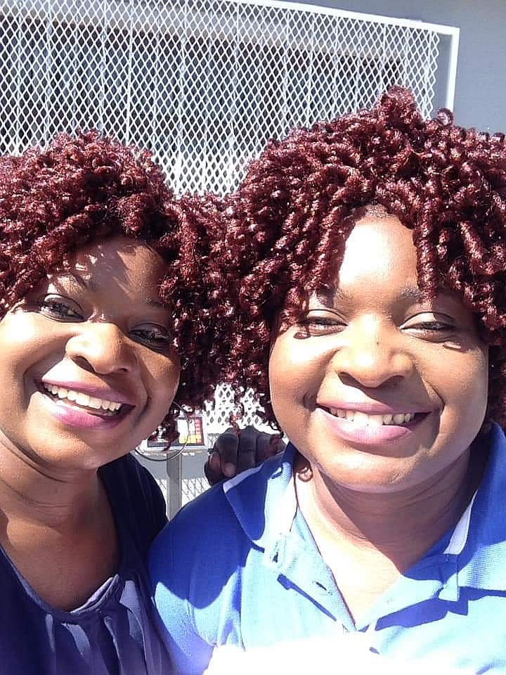
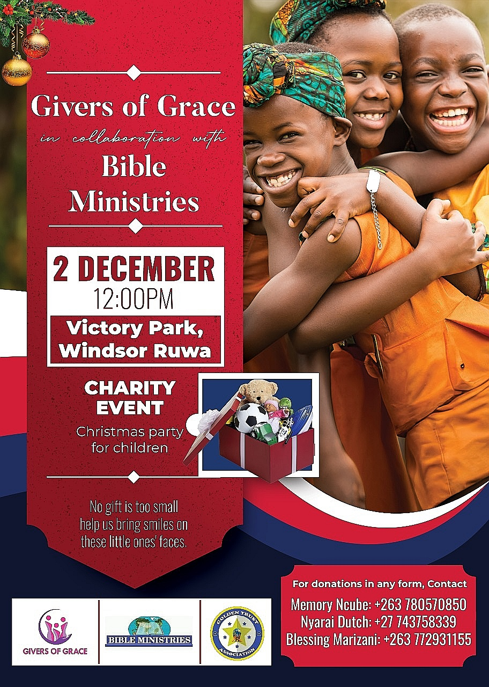

About Us
We are a non-profit organization founded in 2011.
Our mission is to empower and uplift the less privileged people and orphans in our community by providing them with the opportunity to learn new skills and start their own businesses.
We also support women and men by addressing issues that affect their livelihoods and quality of life.
We are so grateful to our donors and volunteers, who make our work possible. Together, we are making a real difference in our community.
Helping is our calling
Mission
Our mission is to promote and Initiate the provision of a conducive environment for orphans, vulnerable children and the less privileged members of the community.
Founders of the Organization

Objectives of the organisation
- To facilitate the provision of conducive environment for the orphans to develop skills and their creativity.
- Givers of grace works in conjunction with other organisations, reputable firm's client parties without and discrimination of beliefs, race, colour, tribe or age.
- Organising income generating projects for men, women, and other underprivileged members of the community.
- Networking and holding business seminars/ training and conferences in a bid to promote entrepreneurship.
Upcoming Events
For more information about the organisation
or to become a Partner or Donor, contact us by tapping any of the buttons below :
Email me
WhatsApp me
View My Tiktok
Facebook Page
Achievements
- Trained dishwashing making at Mabvuku community in 2018.we trained both men and women . They were happy and some started their own businesses. Among them were old women.
- In December 2022 we donated some sanitary pads to young girls in Dzivarasekwa community. They were a total of 20 girls who benefited the they were so delighted. As Givers of Grace Trust we taught them to work using their hands and to know their rights as girl children.
- In March 2023 we donated sanitary wear to girls at Zimcare Trust which is the school for children with mental disability. As per the report that we got these children face challenges every month such that some don't come to school because even the parents cannot afford to provide them with the sanitary wear. We therefore saw the need to assist.
-
In December 2023,we will be hosting a Christmas party in Ruwa. The event is to provide various items for the Vulnerable and less privileged people. To make their Christmas enjoyable
